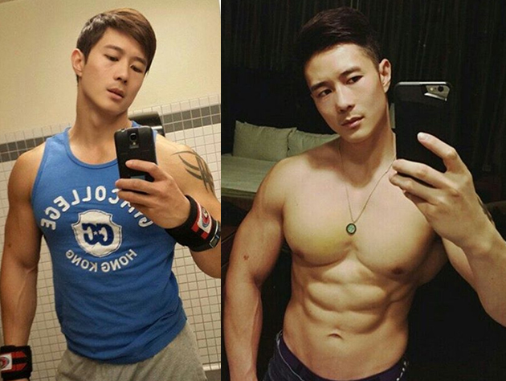

![]()
التسليم الآمن! لا تقلق! نحن نهتم بسلامة عملائنا!
يقوم مندوبو التوصيل لدينا بتغيير القفازات وأقنعة الوجه كل ساعتين. تتم عملية الدفع عند الإستلام .
عندما بدأت أكبر، كنت أعاني من مشكلة تُعرف باسم "التثدي". هذا يعني أن ثديي أكبر من ثدي أمي. لقد تعرضت للسخرية والسخرية من زملائي خلال فترة الدراسة بأكملها. لحسن الحظ، اكتشفت عن MuscleUp في الوقت المناسب. وبفضل هذا المكمل الغذائي بدأ جسدي يتغير تلقائيًا. لقد استبدلت الدهون الزائدة المتراكمة في منطقة صدري بعضلات صلبة. لدي أيضًا عضلة ذات رأسين لطيفة. ومنذ ذلك الحين أشعر وكأنني ولدت من جديد. أوصي به لأي شخص يريد أن يشعر وكأنه رجل حقيقي!
لقد كنت نحيفًا إلى حد ما طوال حياتي، لكن كان لدي دهون على بطني. لسنوات حاولت التخلص منها. لقد مارست الرياضة، وركضت، وتناولت مواد مختلفة. لا شيء ساعد. فقط بفضل MuscleUp, فقدت الدهون واكتسبت العضلات. في أسبوع واحد، اكتسبت 4 كجم من العضلات؛ وبعد شهر واحد 10 كجم من العضلات. ليس سيئا، هاه؟
بفضل MuscleUp, حصلت على مظهر رياضي في أقل من 3 أسابيع. أبدو كما لو كنت أمارس الرياضة طوال حياتي، وأقوم بما أفعله عادةً. أمارس التمارين الرياضية وأقابل أصدقائي وأشاهد التلفاز... مثل هذه الأنشطة اليومية. والعضلات تنمو من تلقاء نفسها!
بصراحة، أنا لا أحب ممارسة الرياضة. مجرد فكرة الذهاب إلى صالة الألعاب الرياضية تؤذيني. أنا ببساطة أفضل أن أفعل المزيد من الأشياء الممتعة. اشاهد مباراة كرة قدم ،او تناول البيتزا، اصطحب فتاة في موعد. لكنني أردت دائمًا أن أبدو جيدًا. ولهذا السبب بدأت أبحث عن شيء يجعلني لائقًا، فقط دون ممارسة الرياضة. ولقد وجدت ذلك! تعمل تركيبة MuscleUp هذه على ضخ عضلاتك دون أي ملل في صالة الألعاب الرياضية. وحتى أنني آكل ما أريد!
وأهم ما في هذه التركيبة أنها طبيعية 100%. لقد دمرت المواد الكيميائية المختلفة كبدي. سأبذل قصارى جهدي للعودة بالزمن إلى الوراء واستخدام MuscleUp بدلاً من تناول تلك المنتجات غير المرغوب فيها. لكنني استخدمته على أي حال واليوم أبدو كرجل قوي!
اسمحوا لي أن أكون محددا: كان عمري 36 عاما عندما قررت أن الأمر يستحق الاعتناء بنفسي. قال أحدهم مازحًا ذات مرة إنني أملك بطن عمي. لقد أيقظني لأنه يزن 120 كيلو. لم أكن أريد أن ينتهي بي الأمر هكذا. لحسن الحظ، أخبرني صديقي من العمل عن MuscleUp وقمت بتحويل الإطار الموجود على بطني إلى مبرد للعضلات. لقد تم ضخ كل ما لدي بعد تمرين شاق، وقد نموا بأنفسهم!
لقد جربت MuscleUp دون اقتناع.... ''ظننت انه عملية احتيال أخرى'' - اعتقدت. كان يجب أن ترى وجهي، بعد أسبوعين نمت عضلاتي كما لو كنت أتناول بعض المنشطات! والطريقة طبيعية وآمنة وقانونية. مذهل!
أعتقد أن هذا المكمل الغذائي هي نوع من السحر. كنت أتدرب بشدة في صالة الألعاب الرياضية، لكنني كنت لا أزال نحيفًا كإصبعي. لم أتمكن من تحقيق "القمة" حتى إستخدمت MuscleUp وصدقوني: الفتيات يحبون ذلك.
مرحبًا، ,
اسمي البروفيسور جوزيف سانتوس وأنا عالم متخصص في الهندسة الوراثية. في هذه الصفحة، أود أن أقدم لكم أعظم إنجاز في حياتي، والذي بسببه تم ترشيحي للتو لجائزة المعادل الآسيوي - جائزة كونفوشيوس. لقد قمت بتطوير تركيبة تحفز تخليق البروتين، مما يساهم في زيادة كتلة العضلات إلى الحد الأقصى. بفضل طريقتي، يمكن لكل رجل أن يكتسب بشكل تلقائي ودائم 10 كجم من الكتلة العضلية النقية في شهر واحد.
...وإذا كنت تريد تحقيق كل هذا بدون تمارين قاتلة و مواد كيميائية خطيرة واتباع نظام غذائي مرهق، ونتيجة لذلك توفير عشرات الآلاف من النقود - يجب عليك قراءة ما يجب أن أخبرك به.
لا يهم كم عمرك أو المدة التي تحاول فيها نحت شخصية عضلية. حتى لو سمعت أنه لا يوجد شيء يمكنك فعله بنوع جسمك لأنك نحيف بالفعل، أو أنك تعاني من زيادة الوزن ومحكوم عليك بالفشل... فاعلم أنه في شهر واحد يمكنك الاستمتاع بـ 3 كيلوجرامات من الوزن الثقيل. !
بفضل ذلك المنتج - لن تضطر إلى ممارسة الرياضة كل يوم أو اتباع نظام غذائي أو تسمم نفسك بالمواد الكيميائية والمعززات المشبوهة. ستنسى كل المشاكل والإذلال الذي عانيت منه بسبب جسم غير رشيق أو نحيف أو سمين. ستبدأ في بناء كتلة عضلية نقية أثناء أداء الأنشطة اليومية - الذهاب إلى العمل، تناول كوب من الشاي، الرد على الهاتف. ستعمل كل حركة تقوم بها على تنشيط عمليات تجديد ألياف العضلات وتحفيز تخليق البروتين، مما سيؤدي تلقائيًا وبشكل دائم إلى بناء كتلة عضلية نقية.
وكل هذا بفضل حقيقة أنني طورت تركيبة وراثية تعمل تلقائيًا على بناء 3 كجم من كتلة العضلات النقية في شهر واحد. كيف فعلت ذلك؟
وفقًا لأحدث الأبحاث التي أجريتها . يعاني 62% من الرجال من مشكلة تدني احترام الذات بسبب افتقارهم إلى الشخصية الذكورية، في حين يُنظر إلى ما يصل إلى 4 من كل 10 منهم على أنهم جبان. ولسوء الحظ، أثرت هذه المشكلة أيضًا على أخي الأصغر .
كان أخي دائمًا نحيف البنية، وأكتافه صغيرة . لكن لم يكن أحد في العائلة يعتقد أنه يشعر بالسوء تجاه جسده. تغير كل شيء عندما ذهب إلى وظيفته الأولى ووقع في حب فتاة التقى بها هناك.
بدأ يواجه صعوبة في النوم، وكانت يداه تتعرقان... كان يظن أنه مريض، لكنه كان واقعًا في الحب "فقط". لقد كان الحب الأفلاطوني. كان أخي خجولًا جدًا، وغير مطمئن ويخشى الرفض.
بعد بضعة أشهر، في حفلة الشركة، تجرأ أخيرًا على الاقتراب من فتاة وعرض عليها الذهاب إلى السينما معًا. لقد كان يتوقع الرفض . و فجأة الفتاة وافقت. كان اخي كأنه في السماء السابعة. وفي الأيام القليلة التالية، لم يتحدث عن أي شيء آخر سوى التاريخ والفتاة التي كان يحلم بها.
لقد خطط لكل شيء بعناية: سينما وفيلم رومانسي ونزهة وعشاء. لقد حددوا موعدًا أمام السينما. عندما وصلت الفتاة، صعدوا إلى قائمة الانتظار في شباك التذاكر. كانوا يتحدثون ويضحكون، وفي المرة الأولى لم يسمعوا أحدًا يقول لهم شيئًا. وفجأة شعر أخي بشخص يربت على ظهره ويقول: "لقد سقط وشاحك". تحول أخي إلى اللون الأخضر في وجهه. "سيدة" - ظن أحدهم أنه امرأة، فقط لأنه كان هزيلاً وأكتافه ضيقة. لم تعرف الفتاة أين تنظر. أراد أن يحافظ على هدوئه وبقي حتى نهاية العرض. بالكاد يستطيع الجلوس على كرسيه، وبعد الفيلم وجد عذرًا وهرب. عاد إلى الشقة التي هدمها من شدة حماسه.
بعد هذا الحادث، انغلق أخي على نفسه. ولم يتصل بأحد من عائلته، وأغلق هاتفه. لا أحد يعرف ما كان يحدث معه. كنا جميعا نموت من القلق عليه.
لقد عزل أخي نفسه عن العالم. منذ تلك اللحظة فصاعدًا، كل ما يهم هو صالة الألعاب الرياضية وأصدقاؤه الجدد والعناصر الغذائية المختلفة التي يزودونه بها. كان يمارس الرياضة على أوزان أثقل وأثقل ويعذب جسده. لقد فعل كل شيء لتغيير جسمه . أراد أن يحول جسده الهزيل وأكتافه الضيقة إلى عضلات. التدريب الشاق في صالة الألعاب الرياضية لم يساعد. لم تظهر أي عضلة على شخصيته الضعيفة. وفي نهاية المطاف، بدأ بشراء مشروبات كيميائية خطيرة، والتي كان من المفترض أن تمنحه جسد لاعب كمال أجسام. في ذلك الوقت لم يكن يرى بعد أنه كان يلعب بحياته. هذه التدريبات القاتلة المستمرة، والدوافع غير الصحية، والكراهية لجسده والمساحيق الخطيرة دمرت صحته ونفسيته.
أسوأ ما في الأمر هو أنه كان يزداد نحافة أكثر فأكثر . لم يعد إلى العمل، ولم يتحمل العار والإهانة في عيون صديقته. لقد تحدث فقط إلى والديه وطلب المال. وتبين أنه تراكمت عليه الديون مع جميع أفراد عائلته ومعظم أصدقائه فقط ليتمكن من دفع تكاليف الصالة الرياضية والمدرب الشخصي والملابس الرياضية والمكملات الغذائية التي يتناولها.
لقد كره جسده فأهلكه وعذبه. أصبحت صالة الألعاب الرياضية غرفة تعذيب بالنسبة له. كان يعتقد أنه يقوم بعمل جيد، وأنه يبني العضلات، لكنه كان يقتل نفسه ويسمم نفسه. في أحد الأيام، رفض جسده ببساطة الانصياع. انهار ووقع عليه ثقل كبير كان يرفعه. تم نقله إلى غرفة الطوارئ. لقد كدت أن أفقد أخي..
كنت بحاجة لمساعدة أخي في بناء جمسهو زيادة اللياقة البدنية الرجولية التي يمكن أن يفخر بها - بدون صالات رياضية أو أنظمة غذائية أو مواد كيميائية خطيرة. أردت منه أن يبني جسدًا يشعر معه بأنه ذكر بنسبة 100٪. عندما كنت في المستشفى ونظرت إلى أخي . خطر لي أنني عالم! لقد شاركت في اكتشاف العديد من المواد التي تحارب المشاكل الصحية المختلفة بشكل فعال وتؤثر على الأنسجة والجينات. لماذا لا أقوم بتطوير صيغة للنمو التلقائي للعضلات تكون فعالة وآمنة؟ وحينها بدأت بحثي..
لقد أجريت أبحاثًا معملية مكثفة لمدة ستة أشهر. لقد اختبرت مجموعات مختلفة من المواد الفعالة على أخي. اسمحوا لي فقط أن أشير إلى أنها كلها طبيعية وآمنة للجسم بنسبة 100٪. وسرعان ما أثمرت المعرفة العلمية وقليل من الحظ. لقد طورت تركيبة فريدة تعمل على تجديد ألياف العضلات وتحفيز تخليق البروتين. تم تأكيد فعاليتها بنسبة من قبل العديد من المستخدمين لها ! أثناء الاختبارات، ساعدت تركيبتي الجينية بالفعل العديد من الرجال على اكتساب كيلوجرامات من الكتلة العضلية النقية.
مايكل، بعد أسبوع واحد فقط من استخدام التركيبة، قام بتنشيط تخليق البروتين وبدأ في اكتساب كتلة عضلية أسرع 8 مرات من الذهاب إلى صالة الألعاب الرياضية وتسميم نفسه بالمواد الكيميائية الخطيرة المختلفة. وكان هذا مجرد بداية. وفي الأسبوع التالي، انفجرت عضلاته الضعيفة! لقد اكتسب العضلة ذات الرأسين التي سيفخر بها العديد من مقاتلي UFC! ثم كان الأمر أفضل، لأن صورته أخذت شكل لاعب كمال أجسام محترف. كانت عضلات الجسم كله صلبة ومضغوطة وقوية.
بعد 3 أسابيع فقط، نظر شقيقي إلى انعكاس صورته في المرآة، وصرخ: "يا صاح، لقد توصلت إلى براءة اختراع للانفجار العضلي! لمثل هذا النتائج ، كنت سأضطر إلى تعذيب نفسي في صالة الألعاب الرياضية لمدة 6 سنوات. انت عبقري!"
لقد بنى أخي 3 كجم من كتلة العضلات واكتسب جسمًا رجوليًا يفخر به
قام أخي ببناء إجمالي 3 كجم من كتلة العضلات النقية في شهر واحد فقط. لقد عاد إلى الحياة بكامل طاقته، ووجد وظيفة، والأهم من ذلك... كان لديه الشجاعة للتحدث مع الفتاة التي كان يحبها طوال الوقت. وتعلم ماذا؟ لقد أغمي عليها تقريبًا عندما رأته! كانت تتوقع أن ترى ولداً هزيلاً، وكان يقف أمامها رجل حقيقي عضلاته كعضلات لاعب كمال الأجسام!
اسمحوا لي أن أشرح لكم بإيجاز لماذا يمتلك بعض الرجال عضلات لاعبي كمال الأجسام المحترفين، في حين أن البعض الآخر هزيل أو سمين. العملية معقدة للغاية، لكنني سأحاول شرحها بلغة مفهومة لشخص ليس عالما.
اعلم أن الشكل العضلي لا يعتمد فقط على التدريبات اليومية. أنا متأكد من أنك تعرف شخصًا يمارس الرياضة كل يوم تقريبًا ولا يبدو وكأنه لاعب كمال أجسام محترف. وذلك لأنه لا يعرف الجميع ما هو تخليق البروتين. وهو الجين الموجود لدى كل رجل، ولكن عندما لا يتم تنشيطه، فإنه يمنع نمو العضلات الطبيعي والتلقائي.
لذلك كان التحدي الذي واجهته هو إنشاء صيغة لها تأثير جذري. ينشط عملية تصنيع البروتين، لذلك أقوم بتنشيط الأنسجة العضلية لتنمو بشكل تلقائي وسريع ودائم وآمن. لقد انجزته! لقد طورت صيغتي الجينية. لقد أسميتها MuscleUp .
وحتى الآن قد يبدو الأمر وكأنه معجزة. لكنها حقيقة تؤكدها حالة أخي و العديد من الرجال اكتسبوا بالفعل كيلوجرامات من كتلة العضلات في شهر واحد. علاوة على ذلك، فقد تم إثبات فعالية الصيغة الجينية بما لا يدع مجالاً للشك . يعد هذا اكتشافًا على نطاق عالمي وقد نال تقدير وإعجاب المتخصصين البارزين في علم الوراثة وعلم التغذية ولاعبي كمال الأجسام المحترفين.
المكونات الطبيعية تصنع العجائب - كل ما يتطلبه الأمر هو العلم للتوصل إلى تركيبتها المثالية! هذا هو الشعار الذي أرشدني في إنشاء الصيغة الجينية. تحتوي التركيبة على مواد طبيعية وآمنة وفائقة الفعالية فقط. MuscleUp هو مكمل غذائي يحتوي على مجموعة مكونات طبيعية 100% من المكونات النشطة، والتي تدعم عمليات تجديد ألياف العضلات وتحفز تخليق البروتين، مما يساهم في زيادة كتلة العضلات إلى الحد الأقصى. تعمل المستخلصات النباتية والفيتامينات والعناصر الدقيقة على تسريع عمليات التمثيل الغذائي بشكل فعال، مما يؤدي إلى تحسين أداء الجسم بأكمله وكفاءة أفضل أثناء التدريبات. تعتمد التركيبة حصريًا على مكونات ذات أصل طبيعي يسهل امتصاصها وآمنة للاستخدام. تعمل التركيبة الفريدة على تسريع نمو كتلة العضلات، وتنظم عملية التمثيل الغذائي للهرمونات وتدعم القدرة على ممارسة الرياضة بشكل فعال. يمكنك أيضًا اكتساب 3-5 كجم من العضلات الصلبة والقوية!
احصل على 3-5 كجم من العضلات في شهر واحد
قوة أكبر بنسبة 70%
الأيض بأقصى سرعة
سهل الاستخدام
البناء التلقائي للعضلات دون اتباع نظام غذائي أو ممارسة الرياضة
توفير المال
يمكنك الاستمرار في النضال في صالة الألعاب الرياضية. يمكنك أيضًا الاستمرار في تسميم نفسك بالمواد الكيميائية والمقويات الخطيرة... لكن لماذا، عندما أضمن لك طريقة سريعة وبسيطة وفعالة من حيث التكلفة لاكتساب كيلوجرامات من الكتلة العضلية النقية؟ يكفيك شهر واحد فقط للانضمام إلى العديد من مستخدمي MuscleUp الراضين ، الذين يستمتعون بالفعل بلياقتهم البدنية في كمال الأجسام.
باستخدام MuscleUp سوف تكتسب كيلوجرامات من العضلات في شهر واحد. بالإضافة إلى ذلك فإنك لا تخاطر بأي شيء! وباعتباره إنجازًا على نطاق عالمي، حصلت صيغتي على ضمان الرضا الثلاثي المرموق: الأصالة والجودة والرضا.
.jpg)
1. الأصالة مضمونة - تعتمد تركيبة MuscleUp الجينية على أقوى المواد التي تعمل على تنشيط نمو الأنسجة العضلية. يتم تأكيد فعاليته قبل العديد من المستخدمين . هذه هي الصيغة الوحيدة المبتكرة الطبيعية الفعالة . لذلك يمكنك التأكد من أنك ستحصل على منتج أصلي، متاح فقط عبر هذا الموقع.
2. ضمان الجودة - نظرًا لعملية التصنيع المتقدمة للمكمل الغذائي MuscleUp انه يلبي أعلى معايير الجودة. حرصًا على صحتك ورفاهيتك، تم اختيار تركيز المواد الفعالة بحيث تكون التركيبة آمنة تمامًا. كل ذلك حتى تلبي تأثيراته توقعاتك بنسبة 100%.
3. ضمان الرضا - تؤكد العديد من الاختبارات من المستهلكين أعلى فعالية لـ MuscleUp. وبناءً على هذه النتائج، حازت التركيبة على اعتراف المتخصصين من جميع أنحاء العالم، الذين نصحوا بها لعملائهم. إنهم على يقين من أنه خلال شهر واحد ستبني 3-5 كجم من كتلة العضلات النقية (بغض النظر عن نوع الجسم).
البروفيسور جوزيف سانتوس

عند شرائك دورة MuscleUp
آخر يوم لهدية الخصم:
عندما بدأت أكبر، كنت أعاني من مشكلة تُعرف باسم "التثدي". هذا يعني أن ثديي أكبر من ثدي أمي. لقد تعرضت للسخرية والسخرية من زملائي خلال فترة الدراسة بأكملها. لحسن الحظ، اكتشفت عن MuscleUp في الوقت المناسب. وبفضل هذا المكمل الغذائي بدأ جسدي يتغير تلقائيًا. لقد استبدلت الدهون الزائدة المتراكمة في منطقة صدري بعضلات صلبة. لدي أيضًا عضلة ذات رأسين لطيفة. ومنذ ذلك الحين أشعر وكأنني ولدت من جديد. أوصي به لأي شخص يريد أن يشعر وكأنه رجل حقيقي!
لقد كنت نحيفًا إلى حد ما طوال حياتي، لكن كان لدي دهون على بطني. لسنوات حاولت التخلص منها. لقد مارست الرياضة، وركضت، وتناولت مواد مختلفة. لا شيء ساعد. فقط بفضل MuscleUp, فقدت الدهون واكتسبت العضلات. في أسبوع واحد، اكتسبت 4 كجم من العضلات؛ وبعد شهر واحد 10 كجم من العضلات. ليس سيئا، هاه؟
بفضل MuscleUp, حصلت على مظهر رياضي في أقل من 3 أسابيع. أبدو كما لو كنت أمارس الرياضة طوال حياتي، وأقوم بما أفعله عادةً. أمارس التمارين الرياضية وأقابل أصدقائي وأشاهد التلفاز... مثل هذه الأنشطة اليومية. والعضلات تنمو من تلقاء نفسها!
بصراحة، أنا لا أحب ممارسة الرياضة. مجرد فكرة الذهاب إلى صالة الألعاب الرياضية تؤذيني. أنا ببساطة أفضل أن أفعل المزيد من الأشياء الممتعة. اشاهد مباراة كرة قدم ،او تناول البيتزا، اصطحب فتاة في موعد. لكنني أردت دائمًا أن أبدو جيدًا. ولهذا السبب بدأت أبحث عن شيء يجعلني لائقًا، فقط دون ممارسة الرياضة. ولقد وجدت ذلك! تعمل تركيبة MuscleUp هذه على ضخ عضلاتك دون أي ملل في صالة الألعاب الرياضية. وحتى أنني آكل ما أريد!
وأهم ما في هذه التركيبة أنها طبيعية 100%. لقد دمرت المواد الكيميائية المختلفة كبدي. سأبذل قصارى جهدي للعودة بالزمن إلى الوراء واستخدام MuscleUp بدلاً من تناول تلك المنتجات غير المرغوب فيها. لكنني استخدمته على أي حال واليوم أبدو كرجل قوي!
اسمحوا لي أن أكون محددا: كان عمري 36 عاما عندما قررت أن الأمر يستحق الاعتناء بنفسي. قال أحدهم مازحًا ذات مرة إنني أملك بطن عمي. لقد أيقظني لأنه يزن 120 كيلو. لم أكن أريد أن ينتهي بي الأمر هكذا. لحسن الحظ، أخبرني صديقي من العمل عن MuscleUp وقمت بتحويل الإطار الموجود على بطني إلى مبرد للعضلات. لقد تم ضخ كل ما لدي بعد تمرين شاق، وقد نموا بأنفسهم!
لقد جربت MuscleUp دون اقتناع.... ''ظننت انه عملية احتيال أخرى'' - اعتقدت. كان يجب أن ترى وجهي، بعد أسبوعين نمت عضلاتي كما لو كنت أتناول بعض المنشطات! والطريقة طبيعية وآمنة وقانونية. مذهل!
أعتقد أن هذا المكمل الغذائي هي نوع من السحر. كنت أتدرب بشدة في صالة الألعاب الرياضية، لكنني كنت لا أزال نحيفًا كإصبعي. لم أتمكن من تحقيق "القمة" حتى إستخدمت MuscleUp وصدقوني: الفتيات يحبون ذلك.
التعليقات